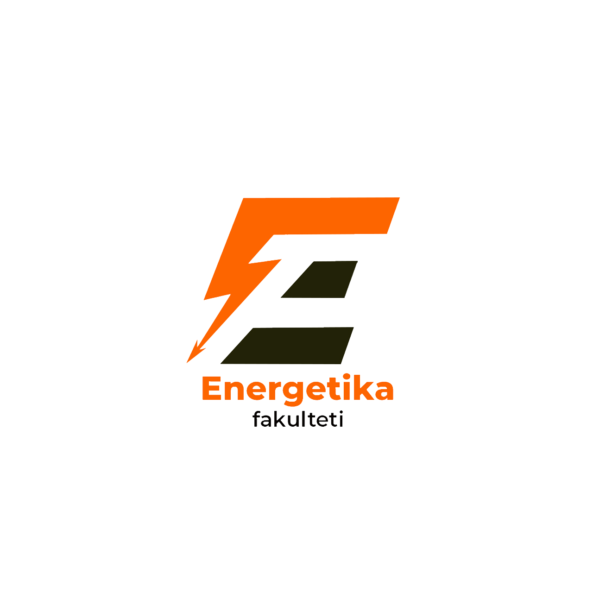

tyutorfarpi
Bosh sahifa
Umumiy ma'lumot
Fakultetlar
Fakultetlar
Fakultet a'zolari o'qituvchilar, murabbiylar, hamkasblar va olimlar sifatida bir nechta rollarni bajaradilar. To'liq kunlik fakultet professor-o'qituvchilari nafaqat sinfda o'qitishda yuqori natijalarga erishishlari, balki kollej jamoasining faol a'zolari sifatida turli mas'uliyatlarni ham bajarishlari kutilmoqda.
Mexanika-mashinasozlik
Energetika
Kimyo texnologiya
Qurilish
Ishlab-chiqarishda boshqaruv
Yengil sanoat va to'qimachilik
arxitektura va quriish materiallari
kompyuterlashgn loyiha tizimlari
Online
Center Of Tutors
Umumiy ma'lumotlar
Tyutorlar faoliyatlari
Fakultetlar
Online
Tyutor hamkorlari
Tyutor
O'qivutvchi
Profilaktika inspektori
Dekan
MFY raisi
QVP bosh shifokori
TTJ direktoriyasi direktori
Dekan muovini
Yoshlar masalalari ma'naviy-marifiy ishlar bo'yicha prorektor
Fakultetlar
Mexanika-mashinasozlik

Energetika
Kimyo texnologiya
Qurilish
Ishlab-chiqarisha boshqaruv
Yengil sanoat va to'qimachilik
Arxitektura va quriish materiallari
Kompyuterlashgan loyiha tizimlari
Tyutorlar faoliyatlari